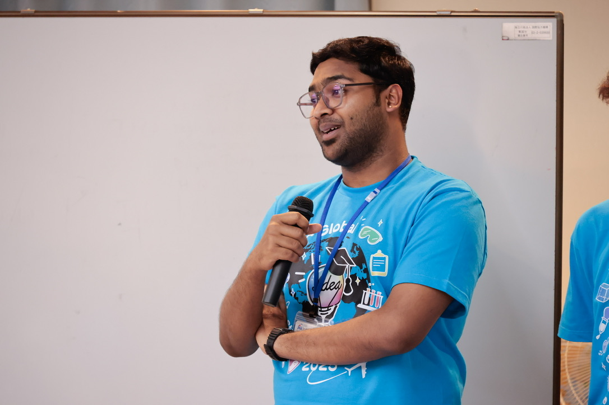
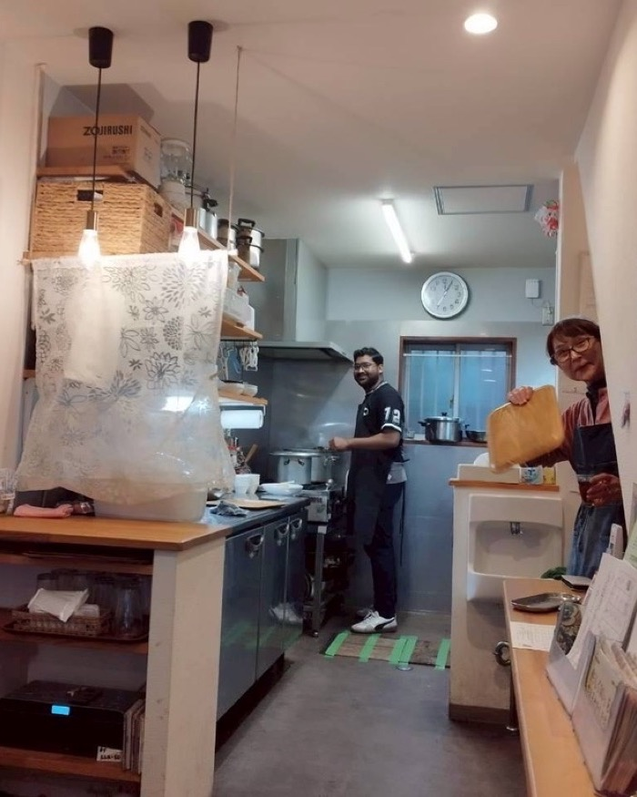
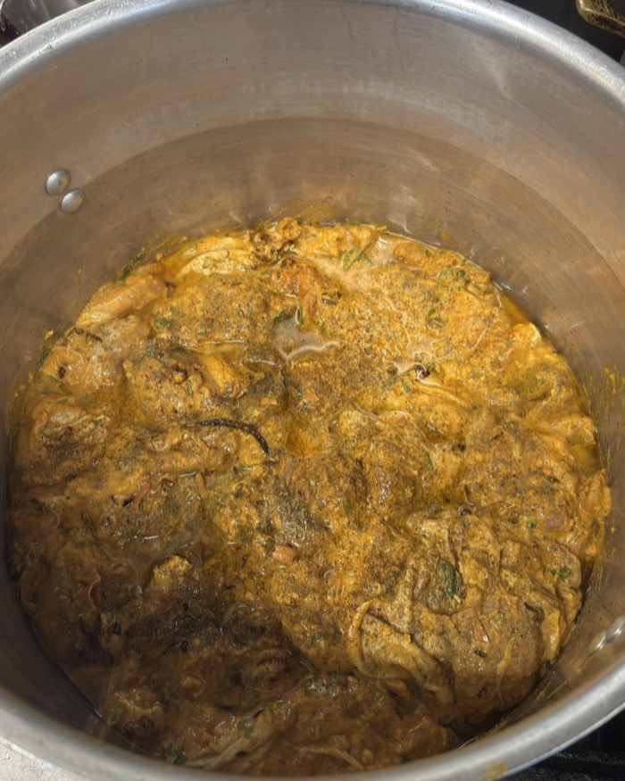
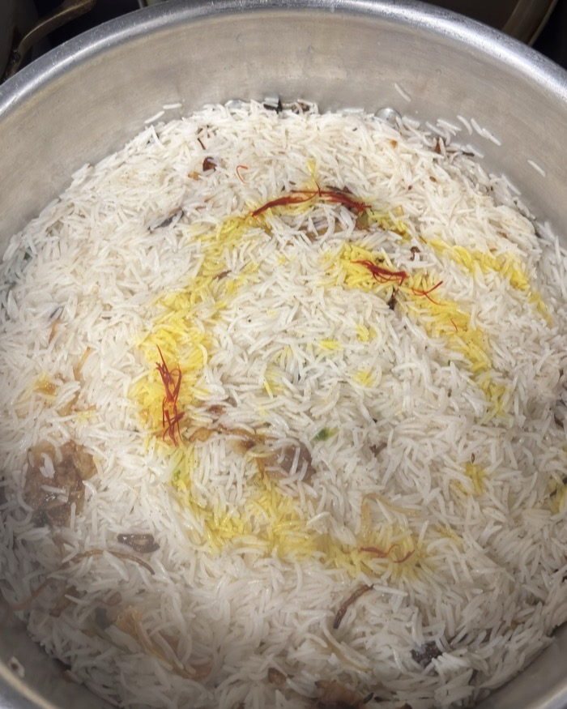
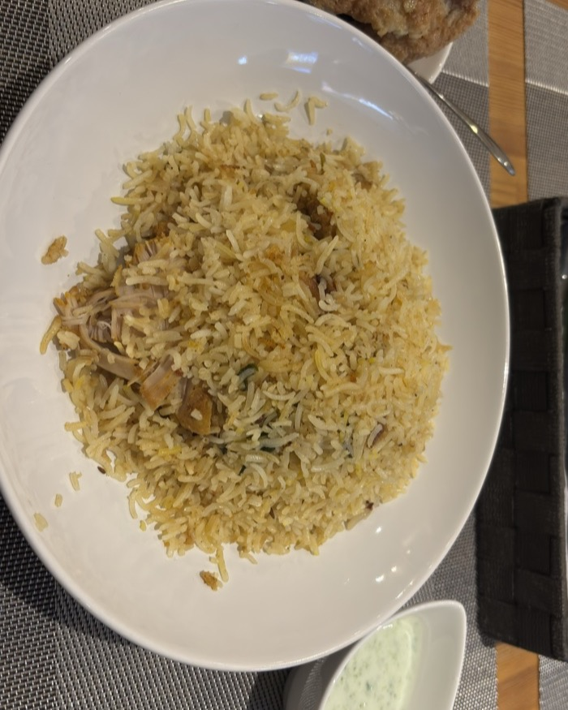

Invited chapter in Geopolitics, Innovation and Societal Challenges (Springer Nature, with Keio University, Tokyo). Examines regional revitalisation through One Village One Product (OVOP) in Japan and One District One Product (ODOP) in India — asking when cultural-commodity branding can slow the decline of shrinking rural communities, and when it cannot.
J-PAL South Asia
Shubham Dey
Evidence synthesis, meta-analysis, and the economics of giving.

I'm a Technical Specialist at J-PAL South Asia, leading evidence gap maps and systematic reviews for the India Climate & Health Data Capacity Accelerator, and supporting field measurement for a large-scale early-grade numeracy programme across Andhra Pradesh and Telangana.
Before this I was a MEXT Research Scholar at the University of Osaka and a research assistant at the Institute of Social and Economic Research, working on the price elasticity of charitable giving. My interests sit at the intersection of behavioural economics, altruism, and meta-analytic methods for development policy.
Research
Charitable giving,
and what the evidence says.
Published
Under review
A meta-analysis of how responsive charitable donations are to their price, drawing on 151 elasticity estimates from 33 studies spanning tax-incentive and matching-donation designs. We build a structured effect-size database, harmonise estimates across heterogeneous designs, and use meta-regression to characterise where the literature's disagreement actually comes from.
Revise & resubmit at the Journal of Economic Behavior & Organization. Presented at ARNOVA 2025.
Japan's Furusato Nozei ("hometown tax") lets taxpayers redirect part of their residence tax to a municipality of their choosing. This paper asks whether the resulting transfers do anything for the places they are meant to save, tracking municipal migration patterns across Japan from 2000 to 2024.
Draft available on request.
In progress
Mapping the rigorous evidence base at the climate–health intersection in India: characterising what exists, locating randomised evaluations within it, and identifying where the gaps that matter for policy actually sit. Built with government agencies and social-impact organisations.
Background
Osaka, Hyderabad,
and a lot of spreadsheets.
Positions
- 2026 —Technical SpecialistJ-PAL South Asia
- 2024 – 26Research AssistantInstitute of Social and Economic Research, Osaka
Education
- 2024 – 26MA EconomicsUniversity of Osaka
- 2020 – 23BA EconomicsUniversity of Hyderabad
- 2026 —MicroMasters, DEDPMIT & J-PAL
Awards
- 2023 – 26MEXT Research ScholarshipGovernment of Japan
- 2024Graduate Research GrantUniversity of Osaka
- 2024Young Scholar Travel GrantINET
Service
- RefereeJournal of Economic SurveysTwo reviews
- MemberMAER-Net · ARNOVA · YSIARNOVA Early Scholars Section
Coursework, training, conference presentations and languages are in the CV
Off the clock
Anthony
Bourdain
who?
I cook, and occasionally I cook for a crowd. In Toyonaka this meant an evening of authentic Hyderabadi chicken dum biryani, served at noon on the dot, with a standing apology for the absent mirchi ka salaan — those chillies were not to be found anywhere in Osaka.
I do not shy away from using my motherland's gifts to the world. It will be quite spicy.




Drag to browse
Contact